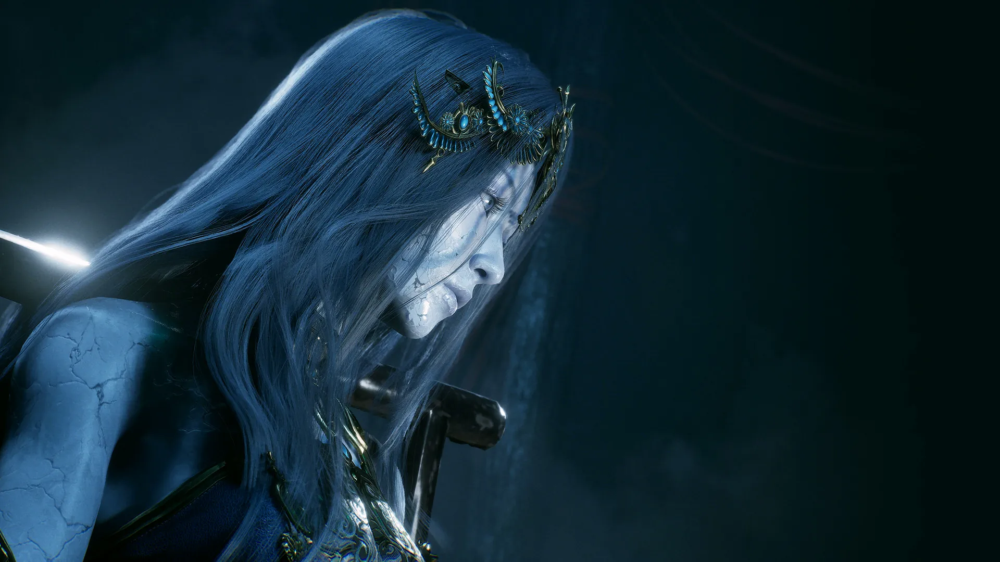

Phantom Blade Zero has at least 50 bosses. That floor comes from the director rather than a checklist: every weapon in the game is taken off a boss, and with 30 main weapons and more than 20 secondary weapons the roster cannot be smaller (4Gamer, 2026-10-09). Nothing above that number is official.
The hardest chain most often named is the five Lóng Pillar trials, which end at Mó Yuan. PC Gamer's guide to that fight describes damage that opens only after a parry, a dodge or a Sha-Chi break — there is no trading window before it (PC Gamer, 2026-10-29). The trials are optional, and some optional bosses feed the Perfect Ending (GameRant).
Story bosses cannot be skipped; optional ones can. Skipping costs an exclusive weapon or Phantom Edge, and nothing respawns to let you earn it back. This page covers 19 encounters: 11 with a full entry, eight more with their region.

Encounter staging is consistent across the roster: a lit arena, a reveal, then the first exchange. Art: official capture, retrieved 2026-11-12.
How many bosses are there in Phantom Blade Zero?
There is no official total. The 50 figure is a floor derived from the weapon list: 30 main weapons plus more than 20 secondary, each earned from a boss, with the director adding that the real number may be higher. (4Gamer, 2026-10-09)
Above that floor, counts diverge because of what gets counted. Rematches inflate them — The Hunt is fought early, then again as The Hunt, Sixfold Scythe. Optional fights inflate them further: the director describes side bosses as a large share of the roster, tuned to a wider difficulty spread than the story fights. PCGamesN, counting every encounter it met, put the roster at just over 60. (PCGamesN, 2026-10-29)
What this page does not do is print a single total. Nineteen encounters are covered here — the eleven with enough published detail to write a useful entry, and eight more that accepted sources place by region without describing the fight.
Common boss-fight mechanics
1. The parry is the turn
Blocking holds ground, dodging resets spacing, and a parry converts an incoming attack into your damage window — three jobs that do not substitute for each other. The game teaches the parry early and then assumes it: Jagged Steel, the second boss, is built as a parry and perfect-dodge lesson rather than a damage check. (PlayStation Blog, 2026-10-28; PCGamesN, 2026-10-29)
2. Sha-Chi is the real health bar
Blocking and heavier Sha-Chi attacks spend the meter; landing hits builds Essence for Power Surge; swapping between your two equipped weapons refills what you just spent. When the meter breaks, the next combo can end the attempt. Boss fights are meter management with a damage phase attached. (PlayStation Blog, 2026-10-28)

The parry is the turn-taking mechanic: it converts an incoming string into your damage window. Art: official capture, retrieved 2026-11-12.
3. Later phases keep their own checkpoint
In multi-phase fights you restart at the beginning of the phase you died in, not at the top of the encounter. A wall is usually a phase problem, not a whole-fight problem — but it is not universal, so treat it as the default rather than a rule. (GameRant)
4. Nothing respawns, so you cannot farm a wall
Defeated enemies stay dead, which removes the usual answer to being under-levelled. The designed response is to explore the side routes you skipped and to reset weapon upgrades so the materials move to a weapon the fight actually rewards. (4Gamer, 2026-10-09)
Phantom Blade Zero boss list: 11 featured encounters
Story fights first, then optional ones, grouped by region. Region names are the stable locator; chapter numbers differ between walkthroughs that count Tales and walkthroughs that count regions.
| Boss | Region | Weakness | Skippable | Key mechanic |
|---|---|---|---|---|
| Zuo Shang, the Order's Shadow Sovereign | Prologue | Bleed (human) | No | Scripted opener; the outcome is the same either way. |
| The Hunt, Hunter of the Order | Weeping Creek Valley | Bleed (human) | No | Returns later as The Hunt, Sixfold Scythe; drops the Hunter's Chain Sickle. |
| Jagged Steel, the Frenzied Brute | Weeping Creek Valley | Bleed (human) — the fight that teaches it | No | Parry and perfect-dodge lesson; drops the bleed sword Jagged Steel. |
| Peng Meng, the Axemaster | Weeping Creek Valley | Bleed (human) | No | Heavy axe; drops the Dread Axe. |
| Bai Chilian, Lady of the Twin Serpents | Crimson Forest | Bleed (human) | No | Drops White Serpent & Crimson Viper. |
| Hua Qianxiao, the Sword Fanatic | Crimson Forest | Bleed (human) | No | Fan-blade reach; drops The Fanatic's Broken Blade. |
| Iron Fiend and Jade Dancer | Village of Lu | Not published | Conditional | Two bosses in one arena; drops Fiend Saws. |
| Wu Lengshuang, the Soft Sword | Mandate Encampment | Bleed (human) | Yes | Whip-blade duelist; drops the Soft Snake Sword. |
| Chief Disciple of the Seven-Stars Formation | Mandate Encampment | Bleed (human) | Yes | Formation fight, not a duel. |
| The One-Eyed Archer | Meigu Lake | Bleed (human) | Yes | Ranged control of the whole arena. |
| The Gold-Masked One | Five Lóng Pillar trials | Bleed (human) — recommended for the early trials | Yes | Counter-only windows; the fifth and last opponent is Mó Yuan. |
Weakness follows the game's own categories rather than extracted numbers: human bosses can be bled, while Puppets, Golden Bodies and Phantom Bodies cannot until you carry the Livingwood Talisman. Where no source describes a fight's defences, the cell says so. PC Gamer
Zuo Shang, the Order's Shadow Sovereign
A cutscene with a health bar. Coverage agrees the outcome is the same whether you win or lose, so treat the prologue as the place the game shows you what a parry is. What it costs you is the habit of attacking into a boss's turn, which is what gets punished from the next fight onward. (PCGamesN, 2026-10-29)
The Hunt, Hunter of the Order
The first boss that can kill you, and the first that comes back. The return is The Hunt, Sixfold Scythe, with more reach than the tell suggests, and it drops the Hunter's Chain Sickle — which is why boss totals disagree: one antagonist, two fights. Counter the marked end of a string rather than trading mid-combo.
Jagged Steel, the Frenzied Brute
The tutorial that actually teaches something. Jagged Steel is built to make you parry and dodge on cue, and it drops the sword of the same name. That sword is why the best weapons page tells you not to spend materials before chapter two: its bleed build carries the early game, and a significant share of the roster is human and therefore bleeds. (PC Gamer)
Peng Meng, the Axemaster
The first heavy-weapon opponent, which changes the timing problem: axe swings start slower and recover for longer, so the answer is patience rather than reflex. Drops the Dread Axe, the earliest two-handed option worth carrying. Betting on a half-finished swing is how this fight kills you.
Bai Chilian, Lady of the Twin Serpents
The Crimson Forest wall, and the most consequential kill on this list: she drops White Serpent & Crimson Viper, the dual-blade pair the weapons page ranks first for combo pressure. Miss the drop and the fastest weapon in the game is gone for that run. She appears in some lists as Bai Chilian, the Sacrificial Serpent — the same encounter under a second name.
Hua Qianxiao, the Sword Fanatic
The other half of the Crimson Forest spike. The fan-blade's reach means a mistimed punish string gets you hit on the recovery rather than the opener, so the fight rewards two-hit confirms over long strings. Drops The Fanatic's Broken Blade.
Iron Fiend and Jade Dancer
Two bosses, one arena, and the first fight where target priority matters more than execution: every second spent on the wrong one is damage taken from the other. It sits in the Village of Lu and the table marks it conditional rather than freely optional, because the Fiend Saws drop goes with the encounter if you move on. (GameRant)
A duel with the combat HUD up: two equipped mains at the bottom right, the swap that refills Sha-Chi. Footage: official capture, 2026-11-12.
Wu Lengshuang, the Soft Sword
An optional duelist in Mandate Encampment and the best argument for detours: she drops the Soft Snake Sword, a kit built on parry timing, sidesteps out of Guard Stance and a counter that redirects an incoming attack's force. The fight tests that kit specifically, so it reads as unfair until the timing clicks. No counter-weapon is required — a defensive build simply suffers less.
Chief Disciple of the Seven-Stars Formation
Not a duel. The encounter is built around a formation of disciples acting as a group, which makes it the one fight here where the arena matters more than a moveset: you manage angles and adds rather than reading a single opponent. Optional, and the encounter most often described as the hardest optional fight in its region.
The One-Eyed Archer
The Meigu Lake optional, and the only fight here that is primarily a ranged-control problem. The arena is the mechanic: the threat is coverage rather than combo length, so the answer is positioning and closing distance instead of parrying. Skippable, and worth doing for the Phantom Edge more than the weapon.
The Gold-Masked One
Five encounters across the Lóng Pillar trials, optional, with the fifth and final opponent named Mó Yuan. PC Gamer's guide is blunt about the shape of it: damage only lands inside the window a successful parry, dodge or Sha-Chi break creates, so the fight is a defence test with a punish attached — and it recommends bleed from Jagged Steel for the earlier trials. (PC Gamer, 2026-10-29)
It is the encounter most often called the hardest in the game. That is a consensus, not a measurement: no one has published a ranking with a method behind it.
Which bosses can you skip?
Story bosses, no: every boss in the first six rows is on the critical path, and the difficulty settings change the fight rather than the requirement. Optional bosses, yes: the Mandate Encampment pair, the Meigu Lake fight and the whole Lóng Pillar chain can be walked past.
Skipping is cheap now and expensive later, for three reasons.
- Drops are exclusive. A large share of the weapons and Phantom Edges sit behind optional bosses, and no shop sells them back.
- Nothing respawns. You cannot recover a skipped boss's materials by farming, because defeated enemies stay dead. (4Gamer, 2026-10-09)
- Some optional fights gate the ending. Optional bosses feed the Perfect Ending, so a completionist run stops being optional past a certain point. (GameRant)
Practical order: clear every optional fight the first time you pass through a region.

Optional encounters get the same staged reveal as story bosses. Art: official capture, retrieved 2026-11-12.
Eight more bosses, by region
These appear in GameRant's region list without enough published detail for a full entry, so they are placed but not analysed: Jing Ye, the Outlaw and Stone Hand Iron Fever in Crimson Forest; Zhuo Bi, the Gatekeeper, Master Bi Yuan, Master Bi Hai, Yuzan, No. 3 Musician Puppet and Mu Xiaokui in the Village of Lu; Blaze, Shadow Warden Captain in Pangzhen. All are story fights unless a list marks them otherwise; none has a published weakness beyond the bleed rule below. (GameRant)
How weaknesses actually work
The only weakness system with a published explanation is bleed, and it maps to enemy type rather than to an element. Human bosses can be bled. Puppets, Golden Bodies and Phantom Bodies cannot — until you pick up the Livingwood Talisman, found in a chest near the Smuggler's Tunnel in the Village of Lu, which extends bleed to them at 50% effectiveness and can be polished to 70%. (PC Gamer)
That is why the table reads the way it does: humans get a weakness, the one construct-type encounter on the list does not, and the boss that hands you the bleed weapon is also the fight that demonstrates it. Elemental resistances and per-boss damage multipliers are widely repeated but have no source this site accepts, so none are printed here.
The director's framing is the other half. He divides enemies into "strong mechanic" fights, where one weapon type is close to mandatory — his example is a shield carrier that a sword can barely break and fist gauntlets trivialise — and "weak mechanic" fights, where the right weapon helps but others still work. Most of the roster is the second kind. (4Gamer, 2026-10-09)
Phantom Blade Zero boss FAQ
How many bosses does Phantom Blade Zero have?
At least 50, per the director, who derived the floor from the weapon list: one boss per weapon, 30 main plus more than 20 secondary. PCGamesN counted just over 60 by meeting every encounter it could. No official total exists. (4Gamer)
Who is the hardest boss?
The Gold-Masked One chain, ending at Mó Yuan — the most-named answer, not a measured ranking. It is optional, it runs five encounters, and its damage windows only exist after a parry, dodge or Sha-Chi break. (PC Gamer)
Can you skip bosses?
Optional ones only; story bosses are mandatory. Skipping costs an exclusive weapon or Phantom Edge, and some optional fights are required for the Perfect Ending. (GameRant)
Do you refight a boss from phase one?
No. Dying in a later phase restarts you at that phase, not at the start of the encounter — the default for multi-phase fights, though not guaranteed for every scripted sequence. (GameRant)
Is there a boss rush or refight mode?
No boss rush or boss-select mode has been announced. Nothing in the published material describes one, and this page does not assume it exists.